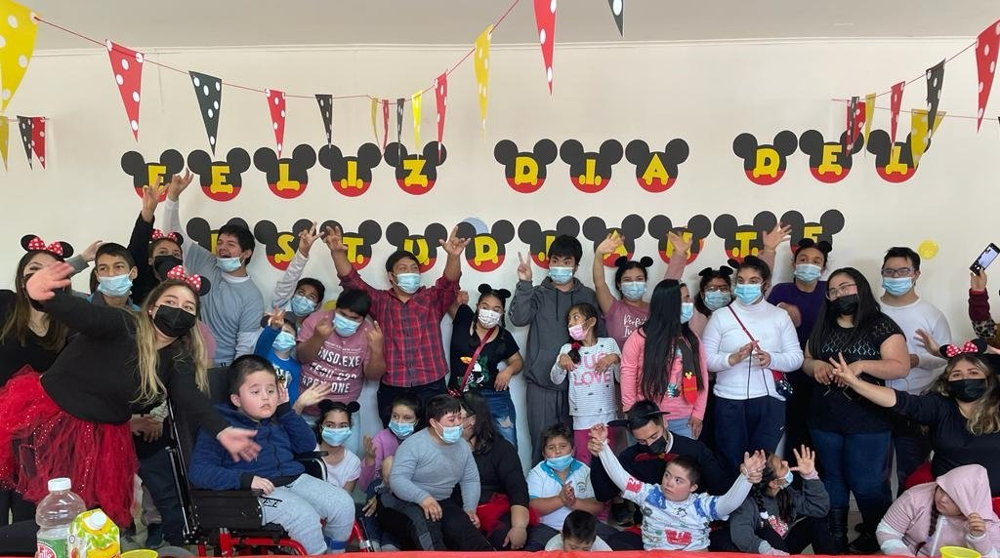

<!-- <hr class="border border-warning opacity-100 ms-5 me-5 mb-5"> -->

<div class="container text-center pt-2 pb-5 nos">
  <div class="col-lg-12">

    <div class="row">
      <div class="col-lg-6 mt-5">
        <figure>
          
        </figure>
      </div>

      <div class="col-lg-6 text-center">
        <h2 class="fw-bold">Misión</h2>
        <p class="lh-1 fs-5">
          Escuela Especial Ángeles, es un proyecto que nace en marzo del año 2013. Atiende alumnos y alumnas con
          necesidades educativas especiales derivadas de una discapacidad intelectual, parálisis cerebral, síndrome de
          down, trastornos de la comunicación. Su misión es entregar educación y formación integral de alta calidad,
          permitiendo la superación personal y entregando herramientas que favorezcan un futuro desempeño familiar, social
          y/o laboral.
        </p>

        <h2 class="fw-bold">Visión</h2>
        <p class="lh-1 fs-5">
          Es una escuela gratuita que atiende niños desde 8 a 25 años de edad, de la comuna de Coltauco y Doñihue. Cuenta
          con un equipo multidisciplinario formado por educadoras diferenciales, psicopedagoga, kinesióloga,
          fonoaudióloga, psicólogas, asistentes de aula, monitor de taller laboral y artesanía.
          A partir de marzo del año 2014, se abre una nueva alternativa educativa para adultos sobre 27 , cuya finalidad
          es entregar herramientas para la formación laboral, que les permita insertarse gradual y efectivamente en la
          sociedad.
      </div>
   </div>

  </div>
</div>


